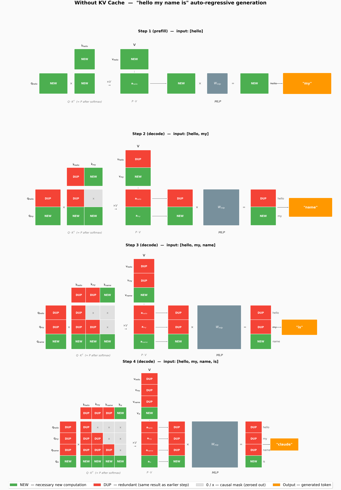
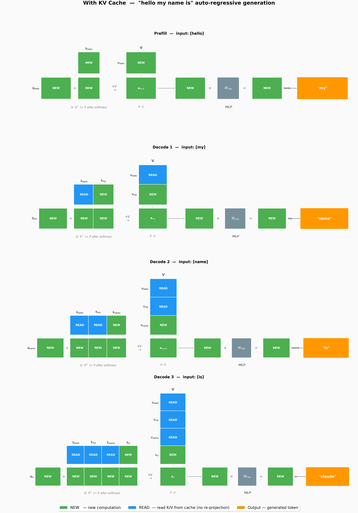

KV Cache¶
问题：自回归生成的计算冗余¶
自回归生成的过程：输入 "hello"，模型预测 "my"；然后输入 "hello my"，预测 "name"；再输入 "hello my name"，预测 "is"……
| Text Only | |
|---|---|
1 2 3 4 | |
每个 Step 的前向传播包括：Q、K、V 投影 → 注意力计算 → MLP。但仔细想——Step 2 输入 "hello my" 时，"hello" 的 Q、K、V 投影和 Step 1 输入 "hello" 时完全一样。因为模型参数没变，"hello" 的 embedding 没变，投影结果自然不变。
也就是说，我们每步都在重新计算上一步已经算过的内容。
无 KV Cache 时到底有多浪费¶
下面 4 张图展现了没有 KV Cache 时的 4 步生成过程：
- 绿色 NEW：这一步必须计算的内容（新 token 的投影 + 之后的注意力 + MLP）
- 红色 DUP：与上一步完全重复的计算（历史 token 的投影）
- 灰色 ✗：causal mask 屏蔽的位置（看不到未来）

聚焦 Step 3（第三行），input=[hello, my, name]：
- Q 列："hello" 和 "my" 的 Q 投影标记为 DUP——这两步在 Step 2 已经算过
- K 行（顶部）：同理，"hello" 和 "my" 的 K 投影也是 DUP
- 注意力矩阵：只有最后一行（name 的 Q 去乘所有 K）是真正需要的 NEW 计算，上方的 "dup" 格子和 Step 2 的结果一模一样
- V 列 + MLP："hello" 和 "my" 的 V 投影和注意力输出也都是 DUP
结论：序列长度 S 时，无 Cache 的每一步都在重算前 S-1 个 token 的 K、V 投影，以及整个三角注意力矩阵的上半部分。
更定量地看：
| Step | 输入长度 | Q/K/V 投影量 | 注意力矩阵大小 |
|---|---|---|---|
| 1 | 1 | 1 token | 1×1 |
| 2 | 2 | 2 tokens | 2×2 |
| 3 | 3 | 3 tokens | 3×3 |
| 4 | 4 | 4 tokens | 4×4 |
| 总计 | 10 tokens 的投影 |
4 步生成 "my name is claude"，累积做了 10 个 token 的 Q/K/V 投影，但其中只有 4 个是真正"新"的。
KV Cache 的核心思想¶
既然每个 token 的 K 和 V 只依赖自己和之前的 token（causal attention 看不到未来），那已经算过的 token，其 K、V 永远不变。所以：
算过一次就存起来，下次直接用，不再重算。
Q 不能缓存——Q 在每一层 Decoder Layer 中都是从当前 token 的 hidden state 投影来的，而 hidden state 的输入来自上一层（self-attention），会随着后续 token 的加入而变化。
K 和 V 可以缓存——它们只依赖当前层的输入 token，不受后续 token 影响。这正是 causal attention 的性质保证的。
有了 KV Cache 之后¶

流程变为 1 次 Prefill + 多次 Decode：
Prefill（Step 1）¶
输入完整 prompt 做第一次前向，计算出所有 prompt token 的 K 和 V，存入 KV Cache。Prefill 和普通的 forward 没有本质区别，只是多加了一步"存进 cache"。
Decode（Step 1/2/3）¶
每次 decode 只输入 1 个新 token（刚采样出来的），对于注意力计算：
- Q：只有当前 token 的 1 个 Q 向量，需要全新计算
- K、V：从这个 token 投影出 1 个新的 K/V，同时从 cache 读取所有历史 token的 K/V，拼在一起
- 注意力矩阵：从 \(S \times S\) 三角矩阵退化为 \(1 \times S\) 的单行——当前 token 的 Q 去乘所有 K
对比两张图的关键差异：
| 无 KV Cache | 有 KV Cache | |
|---|---|---|
| Step 3 Q 列 | 3 行（hello/my/name） | 1 行（name） |
| Step 3 K 行 | 3 个全重算 | 2 个 READ + 1 个 NEW |
| Step 3 注意力矩阵 | 3×3 三角 | 1×3 单行 |
| DUP 标记 | 遍地都是 | 零 DUP |
计算量对比¶
| 操作 | 无 Cache（4步累计） | 有 Cache | 节省 |
|---|---|---|---|
| Q Proj | 10 tokens | 7 tokens | -30% |
| K Proj | 10 tokens | 7 tokens | -30% |
| V Proj | 10 tokens | 7 tokens | -30% |
| Q·K^T | 10 | 10 | 0% |
| P·V | 10 tokens | 7 tokens | -30% |
| O Proj | 4 tokens | 4 | 0% |
| MLP | 10 tokens | 7 tokens | -30% |
注意 Q·K^T 没有节省。 虽然注意力矩阵从三角变成了单行，但计算量本质上是一样的：K 的 token 数（S）不变，每个 Q 还是要乘全部的 K。KV Cache 节省的是"不重复产生 K 和 V"，而不是"不重复算注意力矩阵乘法"。
Prefill 与 Decode 的差异¶
KV Cache 将自回归生成拆成了两个截然不同的阶段。理解它们的差异是后续深入推理优化的关键。
一句话区分¶
| Prefill | Decode | |
|---|---|---|
| 干什么 | 一次处理整个 prompt | 逐个生成新 token |
| 输入 | 全部 prompt tokens | 1 个 token（上次采样结果） |
| 并行度 | 全部 token 并行计算 | token 间串行，token 内并行 |
| Q 形状 | (B, S, hidden) | (B, 1, hidden) |
| 注意力矩阵 | S×S 三角 | 1×S 单行 |
| 瓶颈 | 计算密集 | 显存带宽密集 |
| 写 KV Cache | 写入 S 个 token 的 K、V | 写入 1 个 token 的 K、V |
为什么瓶颈不同¶
Prefill 是计算密集：S 个 token 同时做 Q、K、V 投影和 MLP，大量的矩阵乘法可以利用 GPU 并行算力。S 越大，GPU 利用率越高，计算时间主导。
Decode 是带宽密集：输入只有 1 个 token，矩阵乘法的计算量很小，但需要从 HBM 读取整个模型权重（几十 GB）和整个 KV Cache（几 GB），只为产生 1 个 token。数据搬移时间远超计算时间，GPU 算力大量闲置。
| Text Only | |
|---|---|
1 2 3 4 5 6 7 8 9 10 | |
这也是为什么长 prompt 处理很快，但逐 token 生成却很慢——前者 2000 token 的 prefill 可能只需 50ms，而 2000 个 decode step 却要好几秒。
从 attention 看差异¶
同样是算 Q × K^T × V：
- Prefill：Q、K、V 都是 S×d 的矩阵，做完整的 S×S 注意力，同时在 S 维度高度并行，适合用 FlashAttention 分块加速
- Decode：Q 只有 1×d，K 和 V 是 S×d（历史全在 cache 里），注意力退化为向量内积 + 加权求和，FlashAttention 优化不明显
总结对比¶
| 维度 | Prefill | Decode |
|---|---|---|
| 输入长度 | S (prompt) | 1 (sampled token) |
| 输出长度 | 1 (first token) | 1 per step |
| 注意力 | S×S, 计算密集 | 1×S, 带宽密集 |
| KV Cache | 写入 | 写入 + 读取 |
| 优化方向 | 并行度、矩阵效率 | 显存带宽、KV cache 压缩 |
| 关键加速 | FlashAttention | PagedAttention, GQA, KV 量化 |
| 当 S=1 时 | Prefill = Decode | — |
关键洞察：当 prompt 只有 1 个 token 时，Prefill 和 Decode 的计算量是一样的。这也是为什么有些框架对短 prompt 直接跳过 Prefill 的单独处理。随着 S 增长，两个阶段的分化越来越明显，需要分别优化。
显存代价¶
KV Cache 中，每一层 Decoder Layer 都要缓存自己的 K 和 V，且 K、V 各占一份。总元素数为：
其中因子 2 来自 K 和 V 各一份，num_layers 才是层数。显存换算：
以 Qwen3-8B（num_layers=36, num_kv_heads=8, head_dim=128）为例：
- 1 token 的 KV cache：2 × 36 × 8 × 128 = 73,728 个元素 ≈ 147 KB (bfloat16)
- 2048 token 上下文 ≈ 300 MB
- 32K 上下文 ≈ 4.7 GB
KV Cache 以显存换速度，这在现代 GPU 上是划算的。
总结¶
KV Cache 是 LLM 推理的第一个核心优化。它利用了 causal attention 中"历史 token 不受未来影响"的性质，将 K、V 投影的计算量从 \(O(S^2)\) 降到 \(O(S)\)。
但 KV Cache 也暴露了新的瓶颈：
- 显存压力：长序列时 cache 膨胀很快 → 催生了 PagedAttention（就像操作系统的分页内存管理）
- Q·K^T 仍然 O(S²)：注意力矩阵乘法本身没有减少 → 催生了 FlashAttention（通过分块计算来加速）
- Prefill 受限于 prompt 长度：长 prompt 的第一次前向仍然要算所有 token 的投影
这些优化会在后续课程展开。